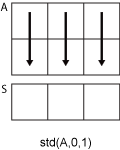

std
Standard deviation
Syntax
Description
S = std(A)A along the first array
dimension whose size does not equal 1. By default, the standard deviation is
normalized by N-1, where N is the number of
observations.
If
Ais a vector of observations, thenSis a scalar.If
Ais a matrix whose columns are random variables and whose rows are observations, thenSis a row vector containing the standard deviation corresponding to each column.If
Ais a multidimensional array, thenstd(A)operates along the first array dimension whose size does not equal 1, treating the elements as vectors. The size ofSin this dimension becomes1, while the sizes of all other dimensions are the same as inA.If
Ais a scalar, thenSis0.If
Ais a0-by-0empty array, thenSisNaN.If
Ais a table or timetable, thenstd(A)returns a one-row table containing the standard deviation of each variable. (since R2023a)
S = std(A,w)w = 0 (default), the standard
deviation is normalized by N-1, where N is the
number of observations. When w = 1, the standard deviation is
normalized by the number of observations. w also can be a weight
vector containing nonnegative elements. In this case, the length of
w must equal the length of the dimension over which
std is operating.
S = std(A,w,vecdim)vecdim when w is 0 or 1. For example, if
A is a matrix, then std(A,0,[1 2]) returns
the standard deviation over all elements in A because every
element of a matrix is contained in the array slice defined by dimensions 1 and
2.
S = std(___,missingflag)A for any
of the previous syntaxes. For example, std(A,"omitmissing")
ignores all missing values when computing the standard deviation. By default,
std includes missing values.
[
also returns the mean of the elements of S,M] = std(___)A used to calculate the
standard deviation. If S is the weighted
standard deviation, then M is the weighted
mean.
Examples
Input Arguments
Input array, specified as a vector, matrix, multidimensional array, table,
or timetable. If A is a scalar, then
std(A) returns 0. If
A is a 0-by-0
empty array, then std(A) returns
NaN.
Data Types: single | double | datetime | duration | table | timetable
Complex Number Support: Yes
Weight, specified as one of these values:
0— Normalize byN-1, whereNis the number of observations. If there is only one observation, then the weight is 1.1— Normalize byN.Vector made up of nonnegative scalar weights corresponding to the dimension of
Aalong which the standard deviation is calculated.
Data Types: single | double
Dimension to operate along, specified as a positive integer scalar. If you do not specify the dimension, then the default is the first array dimension whose size does not equal 1.
Dimension dim indicates the dimension whose length
reduces to 1. The size(S,dim) is
1, while the sizes of all other dimensions remain the
same.
Consider an m-by-n input matrix,
A:
std(A,0,1)computes the standard deviation of the elements in each column ofAand returns a1-by-nrow vector.
std(A,0,2)computes the standard deviation of the elements in each row ofAand returns anm-by-1column vector.
If dim is greater than ndims(A),
then std(A) returns an array of zeros the same size as
A.
Vector of dimensions, specified as a vector of positive integers. Each element represents a dimension of the input array. The lengths of the output in the specified operating dimensions are 1, while the others remain the same.
Consider a 2-by-3-by-3 input array, A. Then
std(A,0,[1 2]) returns a 1-by-1-by-3 array whose
elements are the standard deviations computed over each page of
A.

Missing value condition, specified as one of the values in this table.
| Value | Input Data Type | Description |
|---|---|---|
"includemissing" (since R2023a) | All supported data types | Include missing values in
|
"includenan" | double, single,
duration | |
"includenat" | datetime | |
"omitmissing" (since R2023a) | All supported data types | Ignore missing values in
A and w, and
compute the standard deviation over fewer points. If all
elements in the operating dimension are missing, then the
corresponding element in S is
missing. |
"omitnan" | double, single,
duration | |
"omitnat" | datetime |